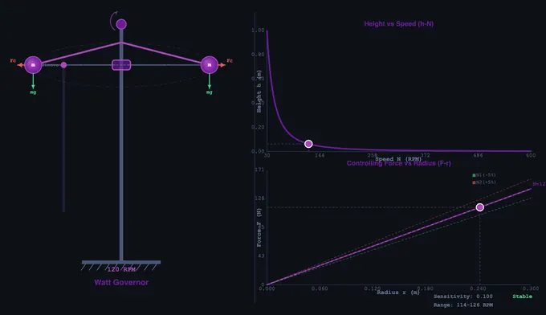
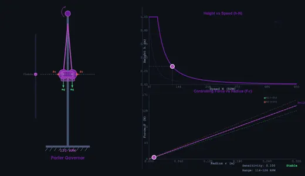
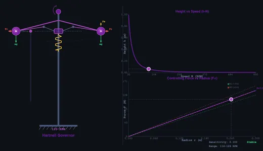

Governor Mechanism Simulator
h = g/ω² • Fc = mω²r • Watt • Porter • Proell • Hartnell — Simulate • Explore • Practice • Quiz
1 Overview
The Governor Simulator provides an advanced interactive environment for studying centrifugal governor dynamics. This tool covers four governor types: Watt, Porter, Proell, and Hartnell (spring-loaded). It features animated mechanism visualisation alongside real-time characteristic curves including height vs speed (h-N) and controlling force vs radius (F-r) plots.
This simulator goes beyond basic animation to show centrifugal force vectors, sleeve lift behaviour, speed regulation characteristics, and sensitivity analysis. The Hartnell governor adds spring-loaded control, making it suitable for studying high-speed applications and spring design for governor mechanisms.
2 Loading the Mechanism
- Select a Governor Type (Watt, Porter, Proell, or Hartnell) to study different configurations.
- Adjust Speed N, Ball Mass m, Arm Length L, and Sleeve Mass M.
- For the Hartnell governor, adjust the Spring k stiffness slider.
- Load presets: Low-speed Engine, High-speed Engine, Steam Turbine, or Diesel Generator.
- The left canvas shows the animated governor; the right shows characteristic curves with a live tracking point.
3 Watching the Motion
The animated governor mechanism shows the spindle, arms, flyballs, and sleeve with force vectors. As you change speed, the balls swing outward and the sleeve rises. The right-side canvas plots real-time characteristic curves: height vs speed, controlling force vs radius, and sensitivity indicators.
Key formulas: Centrifugal force Fc = mω²r, Watt height h = g/ω² = 895/N² (metres). For Hartnell governors, the spring force provides the restoring mechanism instead of gravity, enabling compact high-speed designs.
4 Geometry & Theory
Study 12 concepts across Governor Types, Characteristics, and Design categories. Topics include all four governor types, controlling force diagrams, stability criteria, isochronism and hunting, effort and power, spring design for Hartnell governors, and friction effects.
5 Try a Problem
Practice covers height, speed, controlling force, sleeve lift, sensitivity, effort, power, spring design, and friction calculations. Quiz provides 5 randomised questions from a pool of 15.
6 Design Notes
- The Hartnell governor is the most practical for high-speed applications — study its spring design to understand modern governor engineering.
- Compare the F-r characteristic curves for each governor type to understand stability and isochronism differences.
- A governor is stable if its F-r curve intercepts the force axis above the origin; isochronous if it passes through the origin.
- Governor effort = mean force on the sleeve for a fractional speed change; power = effort × sleeve lift.
- Use the presets to compare low-speed and high-speed configurations and observe how the characteristic curves change shape.
Understanding Centrifugal Governors — Free Interactive Simulator

Centrifugal governors are essential mechanical devices used to regulate the speed of prime movers such as steam engines, internal combustion engines, turbines, and diesel generators. They operate on the principle of centrifugal force: as the engine speed increases, rotating masses (flyballs) move outward, lifting a sleeve that adjusts the fuel or steam supply valve to bring the speed back to the desired operating range. This feedback mechanism has been fundamental to engineering since James Watt first adapted the conical pendulum governor for his steam engine in the 18th century. Governors remain relevant in modern engineering education as they demonstrate core concepts of dynamics, feedback control, and mechanical design.
Types of Centrifugal Governors — Watt, Porter, Proell & Hartnell
The Watt governor is the simplest form — two balls attached to arms that rotate about a vertical spindle. The height of the governor cone h = g/ω² depends only on angular velocity, making it unsuitable for high speeds where h becomes negligibly small. The Porter governor adds a central dead weight (mass M) on the sleeve, which increases the range of speed regulation and improves sensitivity. The governing equation becomes h = g(m + M(1+f))/(mω²), where f accounts for friction. The Proell governor is a modification where the balls are attached to extensions of the lower arms rather than at the joints, providing greater sleeve lift for the same speed change. The Hartnell governor is a spring-loaded type that uses bell crank levers and a central spring, making it compact and suitable for high-speed applications. Its controlling force is F = mω²r and the spring force provides the restoring mechanism.


Governor Characteristics — Height, Controlling Force & Sensitivity
The height vs speed characteristic (h-N curve) shows how the governor cone height decreases as speed increases. The controlling force diagram (F-r plot) reveals the governor's stability: if the F-r curve passes through the origin, the governor is isochronous (all equilibrium positions occur at the same speed). If the curve intercepts the F-axis above the origin, it is stable. The sensitivity of a governor is defined as s = (N2 - N1)/N, where N1 and N2 are the minimum and maximum equilibrium speeds, and N is the mean speed. A governor with high sensitivity responds to small speed changes, while one with low sensitivity requires larger speed variations to actuate. The isochronous governor has zero range and infinite sensitivity — an idealized condition.
How to Use This Simulator
In Simulate mode, select a governor type (Watt, Porter, Proell, or Hartnell) and adjust speed (RPM), ball mass, arm length, sleeve mass, and spring stiffness. The left side of the canvas shows an animated governor mechanism with rotating spindle, swinging arms, flyball trajectories, and sleeve movement. Force arrows display centrifugal force, gravity, and spring force vectors. The right side displays characteristic curves: height vs speed (h-N), controlling force vs radius (F-r), and sensitivity indicators with the operating point tracked in real time. Use presets like Low-speed Engine, High-speed Engine, Steam Turbine, and Diesel Generator to explore realistic configurations. Switch to Explore to study 12 governor concepts across three categories. Practice generates random calculation problems covering height, speed, controlling force, sleeve lift, sensitivity, effort, power, spring design, and friction effects. Quiz tests your knowledge with 5 randomised questions from a pool of 15.
Key Formulas & Engineering Applications
The centrifugal force on each ball is Fc = mω²r, where m is ball mass, ω = 2πN/60 is angular velocity in rad/s, and r is the radius of rotation. For a Watt governor, height h = g/ω² = 895/N² (in metres, with N in RPM). The effort of a governor is the mean force exerted on the sleeve for a given fractional speed change, while power is the work done = effort × sleeve lift. Governors are used in automotive cruise control systems, frequency regulation of alternators, speed control of turbines in power plants, and industrial process control. Understanding governor dynamics is critical for mechanical engineers working with rotating machinery and control systems.
Who Uses This Simulator?
This simulator serves mechanical engineering students studying theory of machines and dynamics of machinery, automotive engineers designing speed governors, power plant engineers working with turbine speed regulation, control systems engineers learning about mechanical feedback, physics students studying centrifugal force applications, and instructors teaching governor mechanisms. It provides hands-on visual understanding of governor behaviour without laboratory equipment or commercial software, making it an invaluable educational tool for technical institutions worldwide.
Explore Related Simulators
If you found this Governor simulator helpful, explore our Centrifugal Governor simulator, Gear Trains simulator, and Flywheel simulator for more hands-on practice.